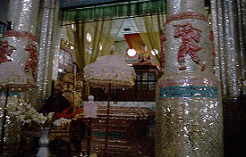
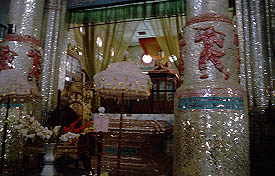

KhanKyiDaungPagoda
カンチーダウンパゴダ
パセインの郊外、カンチーダウン村にあるパゴダ。
 

まず僧院にいってみる。ガラスモザイクが乱反射する神々しい講堂で子供の坊さん達がお経を唱えている。
ギンギラギンの講堂にエコー効きまくり＆フルボリュームのお経。それはそれは夢のような光景。
もう、ナチュラルトリップですよ。

講堂の教壇のようなところにはウピニャ・トゥタという偉いお坊さんの生き人形が飾られている。最初生きているのかと思って、挨拶しそうになっちゃいました。

で、そのウピニャ・トゥタ氏のコレクションルームへ。
仏像と一緒に世界各国の様々なモノが並べられているが、大体がレトロとジャンクの中間の物凄〜く半端なグッズばかり。水飲み鳥（判りますかあ〜）とか中国のプラスチック製のしょーもない飾りとか1960〜70年代に各国でお茶の間に飾られていたようなものばっかりで、膝カックンきます。
あと世界中のコインとか。
日本の軍票（多分戦後に刷られた偽物）もありました。
この辺は戦時中、日本軍が駐留していたところでもある。

で、仏塔はバガンのアーナンダースタイルの立派なもの。
何でこんな片田舎にこんな立派なモノが、と思える位、立派なパゴダである。

次は洞窟だ！
ミャンマーパゴダ列伝２のページへ
珍寺大道場 HOME